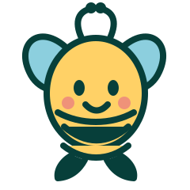

♡
Individualised ABA therapy
Personalised support shaped around your child's unique goals, strengths and needs.
Explore servicesAt WestsideHill ABA, we provide compassionate, evidence-based therapy to help children with autism build skills, gain independence, and reach their full potential.


✳♡
Children make progress when they feel safe, understood and encouraged to be themselves.
Our approach starts by listening to your family. Together, we build on your child's strengths and find practical ways to support the moments that matter in everyday life.
Learn about our approachSupport that grows from your child's strengths, interests and everyday routines.
Personalised support shaped around your child's unique goals, strengths and needs.
Explore servicesBuild communication, connection and daily living skills through meaningful practice.
How therapy worksPractical collaboration to help you feel supported and connected along the way.
Discover family supportWe listen first, then work with families to explore goals that feel useful in everyday life.
We make space for those strengths as we plan supportive, practical next steps together.
Our approachRespectful support for connection and communication in ways that work for the individual.
Explore practical skills that can support more comfortable daily moments.
Your knowledge and priorities help shape the conversation.
For familiesYou don't need to have every answer ready. A conversation can help you understand the available options.
Talk with usShare your questions and the kind of support you're exploring.
Ask about approach, services, availability and next steps.
Take the time you need to make an informed decision.
We see the whole child and their family.
Small steps create big changes.
We work together for better outcomes.
Every child belongs and matters.
Tell us what you're looking for. We're here to help your family explore what comes next.